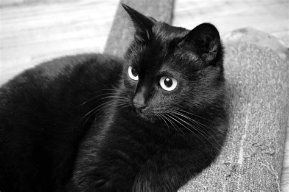

Welcome to my website
This website is basically my portfolio and includes the most important facts and some trivia about me.
Cute cat images
Cat image
<-- Cat image -->

^
|
|
Cat image -->
It would seem that I like cats, but that is not entirely true. Yes, they look cute, but I don't have some special relationship with them. I've never owned a cat. Do I want to have a cat? Probably, I'm not entirely sure how that would work out.